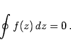

Inhalt Index DeskTop Bronstein

 Funktionentheorie Integration im Komplexen Integralsatz von Cauchy, Hauptsatz der Funktionentheorie
Funktionentheorie Integration im Komplexen Integralsatz von Cauchy, Hauptsatz der Funktionentheorie


Wenn eine Funktion f(z) in einem einfach zusammenhängenden Gebiet analytisch ist, dann gelten die folgenden zwei äquivalenten Aussagen:
|  | (14.40) |
Dieser Sachverhalt wird Integralsatz von CAUCHY, auch Hauptsatz der Funktionentheorie genannt.